School Years
Ouachita High School
Young Sherry during her school years in Monroe, before the many changes and seasons that would follow.
Her Sky Had Seasons
A companion gallery to the novel, bringing together the faces and places behind Sherry's story.
People
School Years
Young Sherry during her school years in Monroe, before the many changes and seasons that would follow.
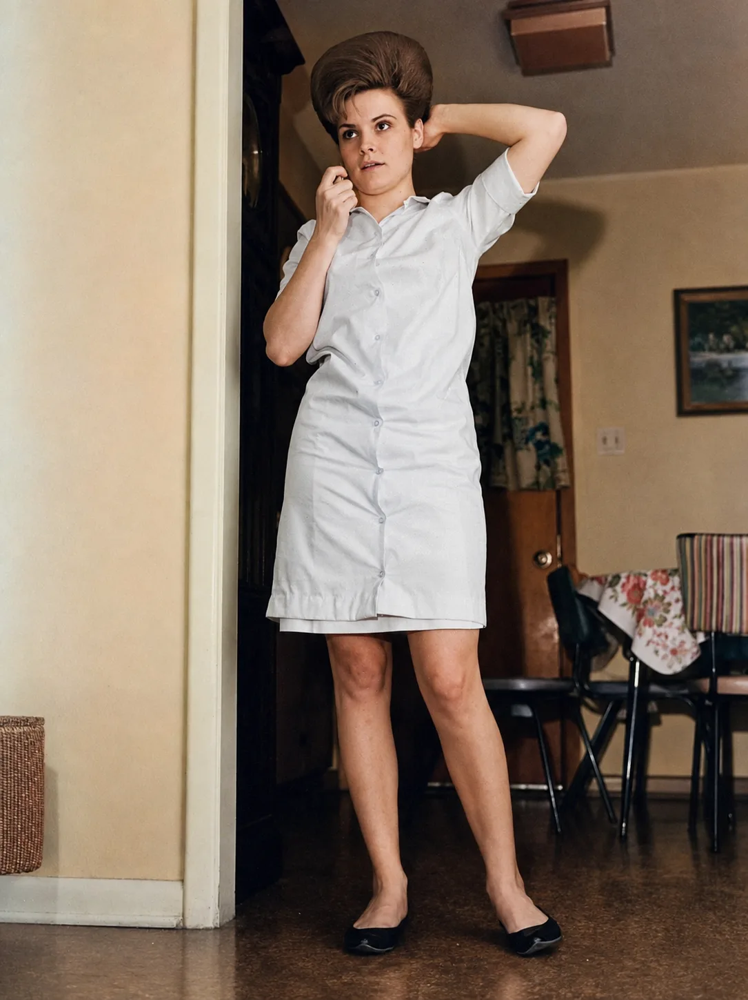
Young Motherhood
Sherry in the early years of marriage and motherhood, at home during one of the first seasons of the family she and Gerald were building.
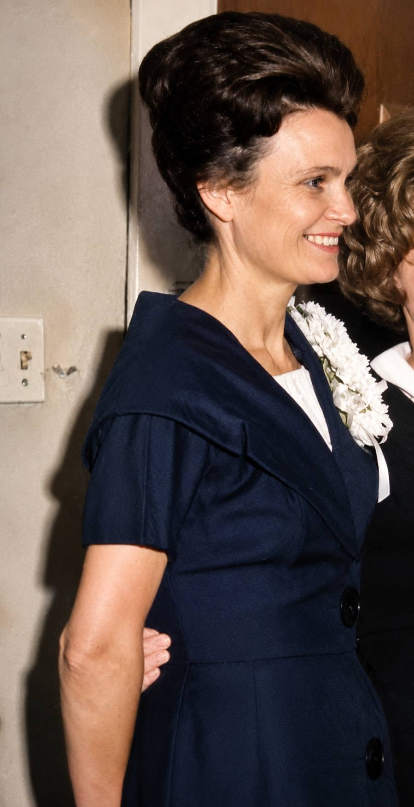
Family
Sherry's mother. Thera created warmth and stability around the family while running her beauty shop, balancing the silence and scars Aubrey carried home from war.
An Earlier Season
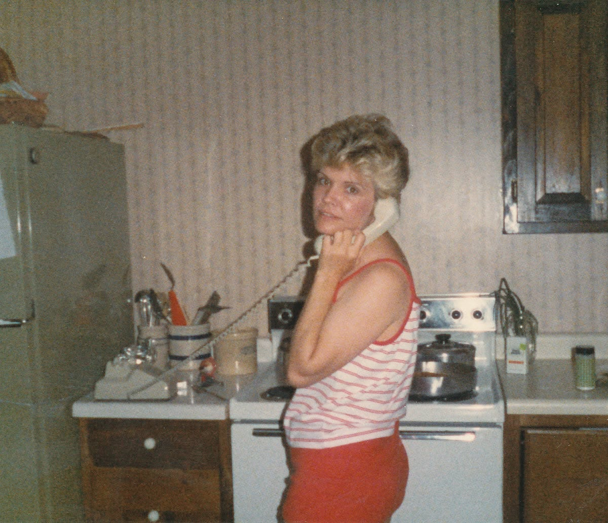
Everyday Life
Cooking was a normal sight wherever Sherry called home. Her kitchen was one of the places where she cared for the people around her, and good food remained a constant throughout her life.
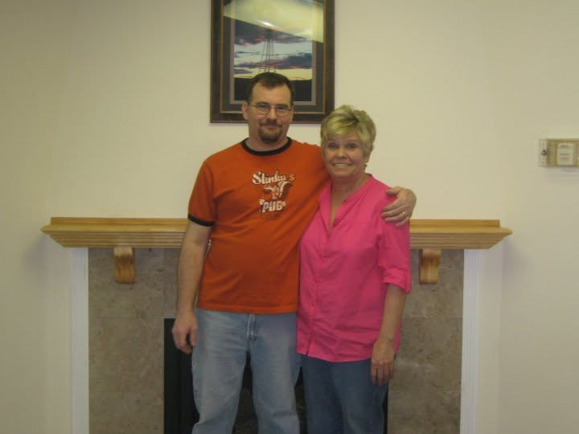
Years in Motion
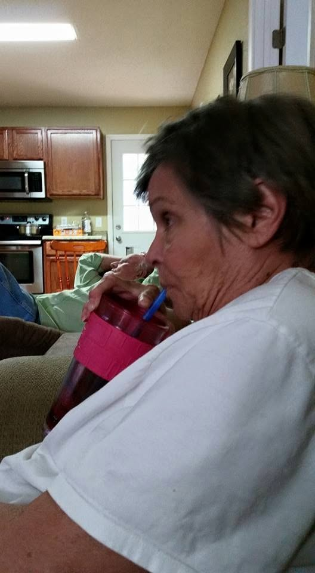
Later Years
Sherry relaxes with a Coke beside Gerald during one of their later years together.
1963
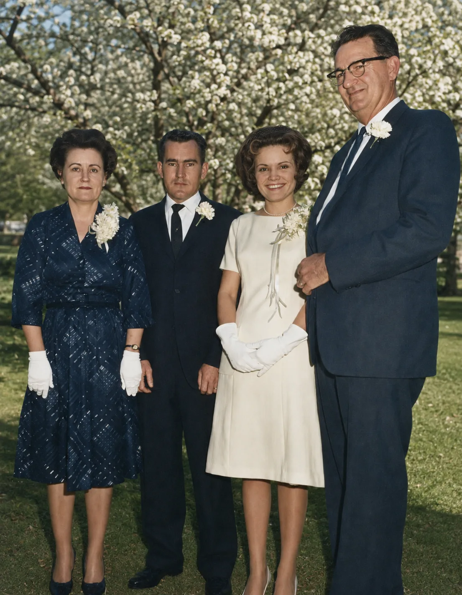
Family
Gerald's parents and Sherry's in-laws. Their home became the first place Gerald and Sherry lived together after their wedding.
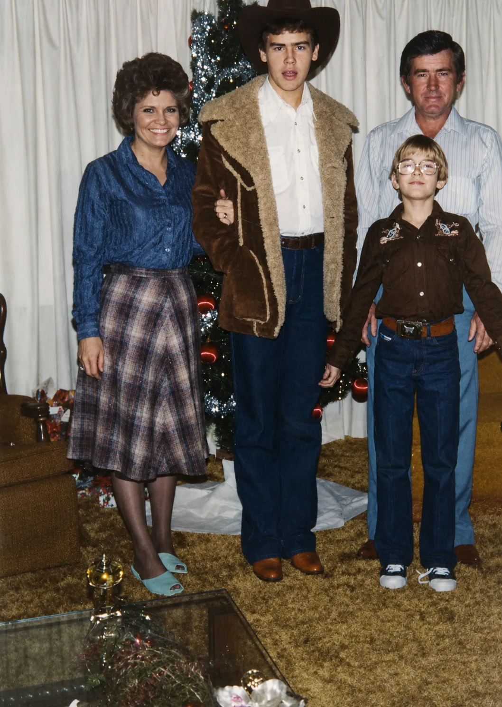
1980
1987
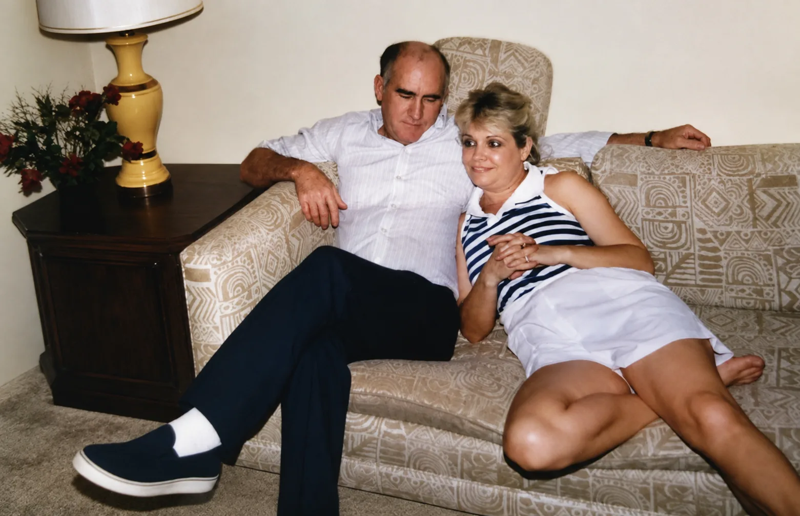
1987
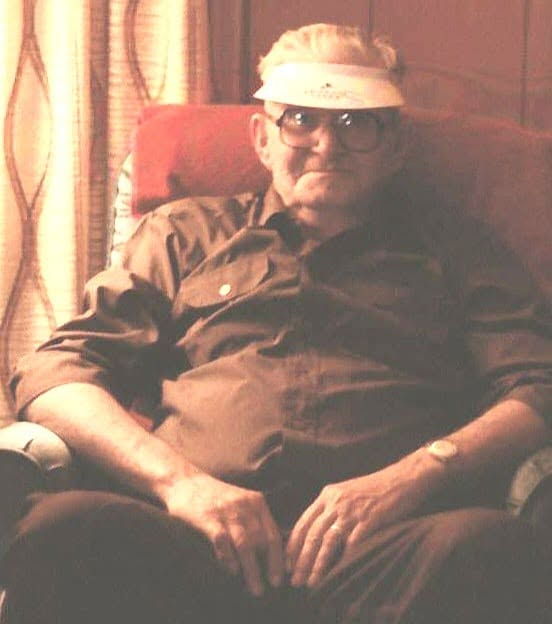
Family
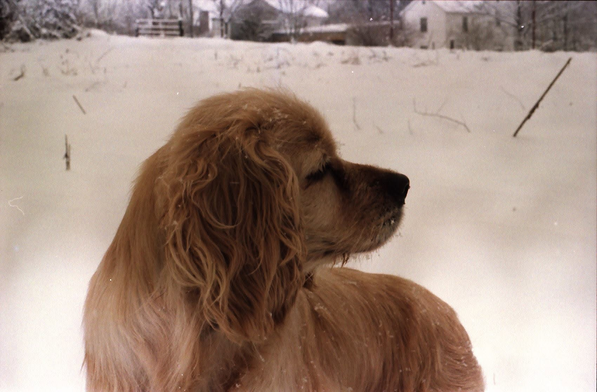
Family Companion
The family dog during the Rheatown years, remembered as part of the ordinary life of the Thorne household.
Places
A place tied to a later season of the story.
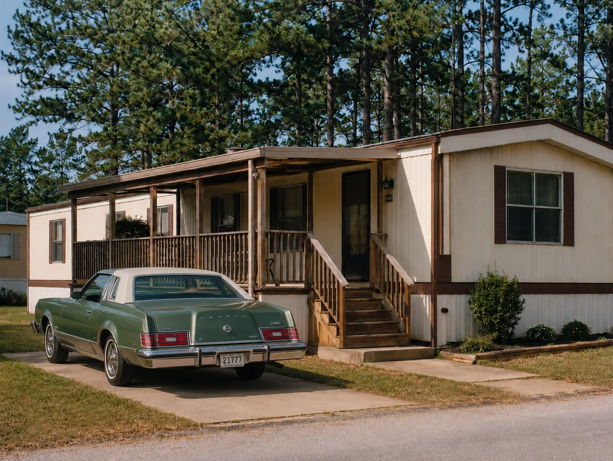
One of the homes connected to the family's years in Louisiana.
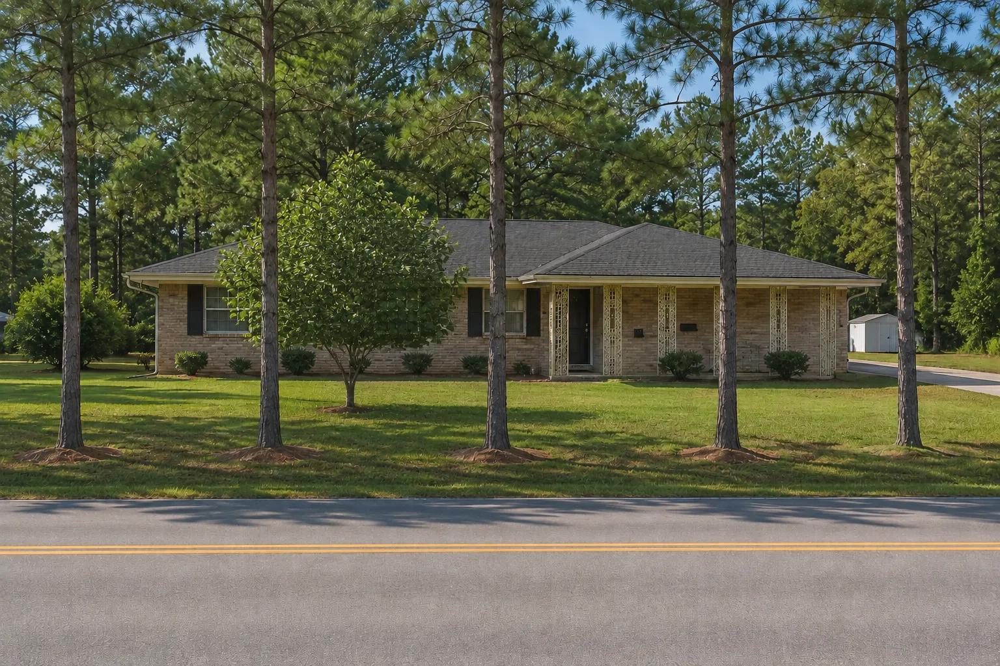
A family place remembered across generations.
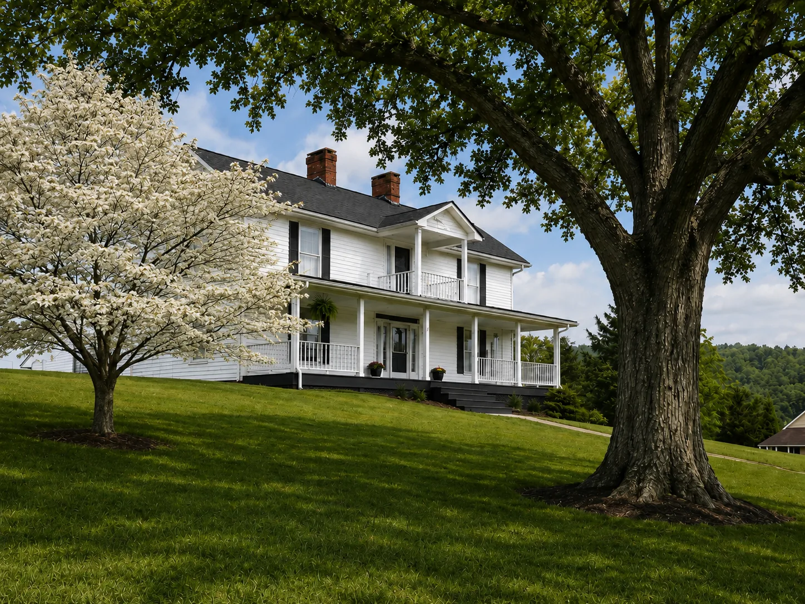
A Tennessee home connected to another chapter of family life.
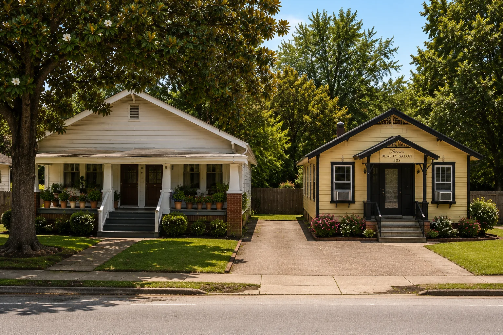
A house tied to the family's movement through the years.
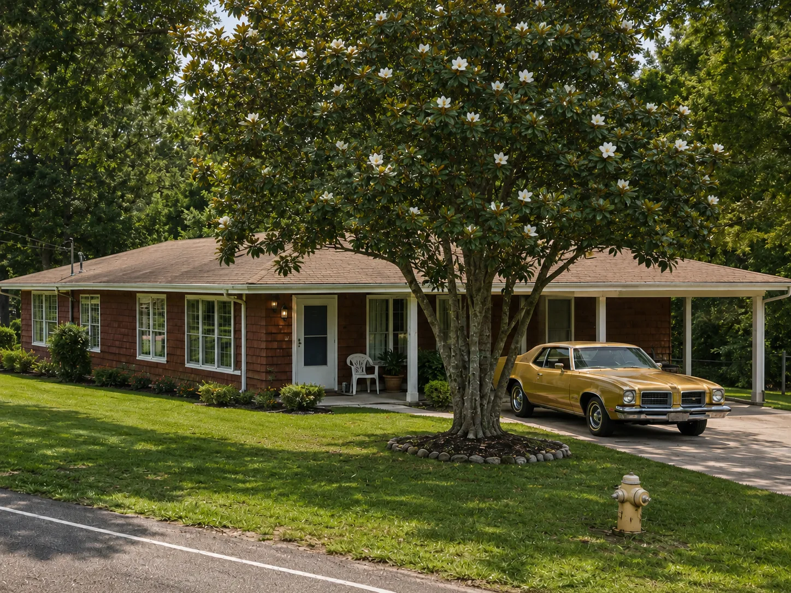
Another home from the changing geography of the story.
Work, friendships, and another important setting.
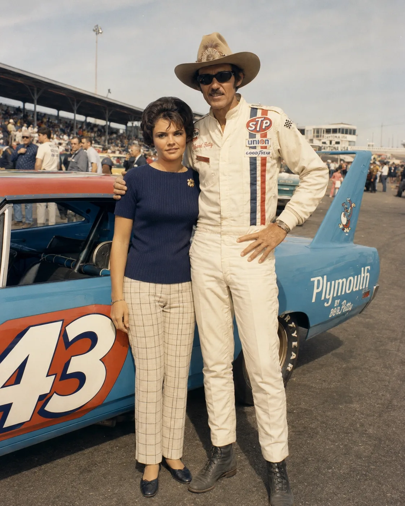
Racing, travel, and the larger world beyond home.
A glimpse of another season and another place.
In Memory & Awareness
Sherry lived with both COPD and Alzheimer's disease. Those illnesses became part of the later seasons of her life and changed daily life for her and for the people who loved her.
The organizations below provide education, support and resources for families facing the same diseases.